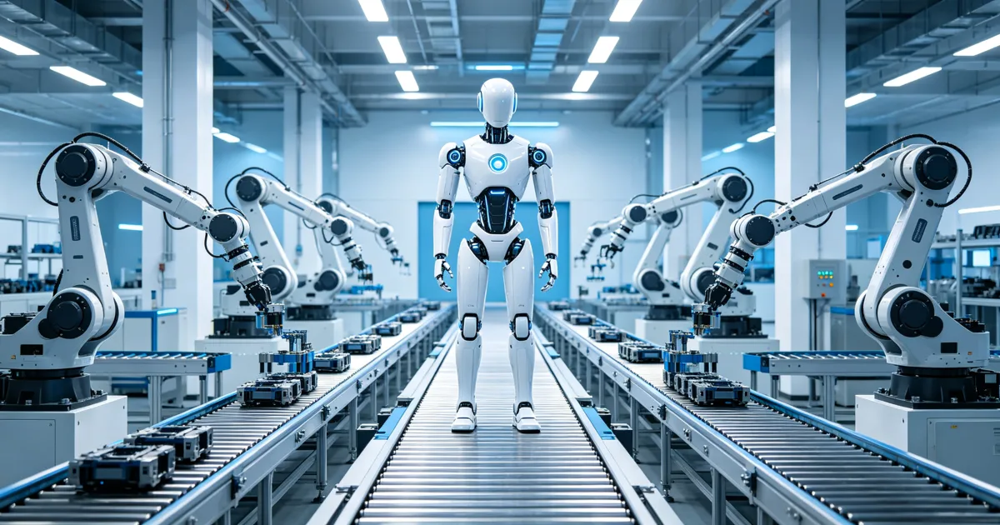

XPeng Robotics — Unternehmensprofil
Die XPENG-Tochter hinter IRON, ihre Finanzierung und ihre Produktionspläne.
Am 27. November eröffneten acht IRON-Einheiten die Automesse Guangzhou als Empfang, Guide und Produktpräsentator – erstmals steht XPENGs Humanoide in Zahlen vor Publikum. Zwei Tage zuvor fixierte der AI Day den kommerziellen Fahrplan: Hardware-Serienproduktion im Januar 2027, Store-Pilot im Q1, Verkauf an Geschäftskunden im Q2, globaler Start in der zweiten Jahreshälfte 2027. Der Roboter hat einen Job. Die schwierigere Frage ist, ob Fabrik, Daten und Käufer im selben Takt ankommen.

Humanoide Ankündigungen haben ein Erkennungsmerkmal. Wenn der Roboter nur läuft, sich verbeugt und winkt, verkauft das Unternehmen ein Video. Wenn der Roboter einen Dienstplan, einen Ausweis und ein Skript bekommt, verkauft es ein Produkt. Auf der Automesse Guangzhou diese Woche gab XPENG acht IRON-Einheiten die zweite Art von Job: Sie standen am Stand in Halle 17.2, begrüßten Besucher, führten sie durch die Fläche, erklärten die Autos und in einem Fall hielten sie die Rede. Es ist immer noch Theater – eine Messe ist eine kontrollierte Umgebung –, aber es ist Theater mit angehängtem Zeitplan, und der Zeitplan ist, was zählt.
Der kommerzielle Kalender, den XPENG auf dem AI Day veröffentlichte, ist für diese Branche ungewöhnlich konkret: Hardware-Serienproduktion im Januar 2027; ein Store-Assistenten-Pilot in ausgewählten Filialen im ersten Quartal; formeller Verkauf an Geschäftskunden im zweiten Quartal; globaler Start in der zweiten Jahreshälfte. Für einen Sektor, in dem „nächstes Jahr“ seit 2023 ein rollendes Versprechen ist, ist ein Januar-Termin eine Zusage, die jemand nachprüfen kann.
Diese Seite begann als Bericht über die Inbetriebnahme der Humanoiden-Montagelinie am 8. September, als der erste IRON die Endmontage mit über 80 Prozent automatisierten Kernprozessen abschloss und aus eigener Kraft vom Band lief. Das war eine Fertigungsgeschichte: der Beweis, dass ein Autohersteller einen allgemeinen Humanoiden durch einen fahrzeugtauglichen Prozess schicken kann statt durch eine Laborbank.
Die November-Ereignisse wechseln das Thema. Der AI Day 2026 unter dem Motto „Origin“ handelte vom Produkt und vom Geschäftsmodell, nicht von der Linie. XPENG führte IRON als „Arbeitspartner“ ein, gebaut um fünf Prioritäten – Grundfähigkeiten, Sicherheit, emotionaler Wert, 24/7-Verfügbarkeit und Arbeitsleistung – und verbrachte den Großteil der Präsentation damit, was der Roboter in einer Rolle kann, nicht was er in einer Demo kann.
Dann kam die Messe. Acht Einheiten sind der größte öffentliche Einsatz, den XPENG bisher versucht hat, und die Aufgaben waren bewusst banal: Empfang, Wegweisung, Fahrzeugerklärung. Banal ist der Punkt. Ein Roboter, der sechs Stunden lang über Ausstattungslinien und Kofferraumvolumen spricht, ist näher am Verkaufsprodukt als einer, der einen Rückwärtssalto macht.
Das Internet fand natürlich die Komödie. Ein am 27. November kursierender Clip zeigte CEO He Xiaopeng, der eine der Einheiten mit „gute Arbeit, kleiner Iron“ begrüßte und berichtete, der Roboter nenne ihn immer „Lei Jun“ – den Xiaomi-Gründer, dessen Stand gegenüber lag. XPENG hat sich zu der Verwechslung nicht geäußert. Es ist eine Erinnerung daran, dass der Wahrnehmungsstack noch Arbeit ist und eine Messe ein viel lauteres Datenset als eine Filiale.
XPENGs Erklärung vom 27. November und die Mitteilung vom 25. November stimmen in der Struktur überein, nicht in jeder Bezeichnung. Die unternehmenseigene Sequenz lautet:
| Meilenstein | Datum | Was er bedeutet |
|---|---|---|
| Hardware-Serienproduktion | Januar 2027 | Die Linie in Guangzhou wechselt von Inbetriebnahme auf Serienbau. Nicht dasselbe wie Serienauslieferungen. |
| Store-Assistenten-Pilot | Q1 2027 | IRON arbeitet in ausgewählten Filialen: Empfang, Produktberatung, Retail-Service. Bezahlter Einsatz im eigenen Netz. |
| Verkauf an Geschäftskunden | Q2 2027 | Formeller Verkauf. So die Formulierung vom 27. November; ein Xinhua/Sina-Bericht vom 25. November nannte Februar für die öffentliche Vorstellung. |
| Globaler Marktstart | H2 2027 | Internationale Märkte, auch dort, wo XPENG bereits Autos verkauft. |
Quellen: XPENG-Mitteilung zum AI Day (25.11.2026); XPENG-Mitteilung zur Automesse Guangzhou (27.11.2026); Xinhua Finance via Sina (25.11.2026). Wo die beiden Unternehmenserklärungen voneinander abweichen, gilt die spätere als aktuell.
Die Diskrepanz zwischen Februar und Q2 sollte man benennen statt glätten. Chinesische Unternehmenskalender verwenden „发布“ oft für die Produktvorstellung und „交付“ für die erste Kundenauslieferung; eine Februar-Vorstellung und ein Q2-Verkaufsstart sind nicht zwingend widersprüchlich, aber auch nicht dasselbe Versprechen. Wer daraus Umsatz modelliert, sollte Q2 ansetzen und davon ausgehen, dass die ersten bezahlten Einheiten wenige sind.
Die November-Mitteilung ist präziser als die September-Fassung und korrigiert eine Zahl, die in der ersten Berichtswelle weit kursierte. IRON hat nicht 76 Körper-Freiheitsgrade plus 21 pro Hand, sondern 76 Freiheitsgrade insgesamt, einschließlich einer 21-Freiheitsgrad-Hand. Für jeden, der das Gerät mit Unitree- oder Tesla-Hardware vergleicht, ist das ein relevanter Unterschied.
| Merkmal | Wert (XPENG, 25.11.2026) |
|---|---|
| Freiheitsgrade | 76 insgesamt, einschließlich 21-Freiheitsgrad-Hand |
| Taktile Sensorik | Über 1.500 Punkte; über 80 Prozent Abdeckung in Kernkontaktzonen (Unternehmensangabe) |
| Wahrnehmung | 3D-Sehen mit 360-Grad-Umgebungswahrnehmung (englische Mitteilung); die chinesische Fassung beschreibt ein 720-Grad-Panoramasystem |
| Rechenleistung | 3 eigene Turing-KI-Chips, 2.250 TOPS effektiv, Modelle und Ganzkörpersteuerung on-device |
| Modellstack | Drei-System-Architektur Turing Physical AI: System 2 (VLT-Planung, Agent Runtime, Zustandsmaschinen), System 1 (VLA 2.0 für Echtzeitentscheidungen), System 0 (physische Ausführung) |
| Interaktion | IRON VLM: Sehen, Hören und Kontext; mehrsprachige Konversation; Ausdruck; vernetztes und lokales Gedächtnis |
| Autonomie | Selbstnavigation und Kartierung, Aufgabenlisten per Sprache oder App, autonomes Laden und Rückkehr auf den Posten, Störungsmeldung, Selbstüberwachung |
| Sicherheit | Fünfschichtige physische Sicherheitsarchitektur, redundante Zweikanal-Kommunikation, unabhängiger ausfallsicherer Balancer-Regler, Fußgänger-AEB |
| Größe / Gewicht | In der Mitteilung vom 25. November nicht genannt. Die September-Berichterstattung nannte 178 cm / 70 kg; eine Sina-Analyse vom 26. November nannte 170 cm / 62 kg. Gilt als unbestätigt. |
Quellen: XPENG-Mitteilung zum AI Day (25.11.2026); XPENG-Mitteilung zur Messe (27.11.2026); Sina-Finance-Technikanalyse (26.11.2026). Größe, Gewicht und Finger-Gelenkzahlen stammen nur aus Sekundärberichten und sind entsprechend markiert.
Die Entscheidung, die Modelle on-device laufen zu lassen, ist die folgenreichste Ingenieursentscheidung im Datenblatt. Ein Roboter, der von einer Cloud-Verbindung abhängt, ist ein Roboter, der stehen bleibt, wenn das WLAN es tut; ein Roboter, der sein Modell mit sich trägt, ist pro Einheit teurer und in einer Filiale, einem Fabrikgang oder einer Hotellobby deutlich besser verteidigbar. XPENG zahlt diesen Preis bewusst – es ist dieselbe Wette wie im Auto.
Die September-Linie ist jetzt die Angebotsseite des Januar-Termins. XPENGs eigene Beschreibung: eine eigens gebaute automatisierte Humanoiden-Linie, über 600 KI-gestützte holografische Prüfpunkte, mehr als 1.000 fahrzeugtaugliche Tests an kompletten Robotern und Schlüsselkomponenten sowie ein ausgelegter Takt von einem IRON alle 2,5 Minuten bei Vollauslastung.
Rechnet man das hoch, ergibt sich eine theoretische Obergrenze von etwa 210.000 Einheiten pro Jahr – 24 Stunden am Tag, 365 Tage im Jahr, ohne Umrüstung, ohne Nacharbeit, ohne Stillstand. Niemand in dieser Branche erreicht das. Eine realistische Erstjahresproduktion liegt bei einem kleinen Bruchteil davon, bestimmt von Aufträgen, Schichtplänen und Ausschuss. Die Zahl taugt nur für eines: Sie zeigt, dass die Linie für Volumen ausgelegt wurde und nicht für ein Foto.
Die andere Hälfte der Infrastruktur sind Daten. XPENGs Roboter-Datenfabrik umfasst 50.000 Quadratmeter, über 250 Szenarien und 15 Jobkategorien und nutzt die Datenverarbeitungs- und Bewertungswerkzeuge der Autosparte mit. Das ist der stille Vorteil eines Autoherstellers in der Robotik: Er besitzt bereits eine Datenpipeline, eine Qualitätsorganisation und eine Zulieferbasis und kann alle drei auf ein neues Produkt richten, ohne sie von null zu bauen.
Die Überschneidung der Zulieferkette mit den E-Auto-Werken beziffert XPENG auf rund 85 Prozent. Wenn das hält, sind die Grenzkosten eines Humanoiden-Programms deutlich niedriger als bei einem reinen Robotik-Startup – und der Hochlauf wird eher von Nachfrage und Zuverlässigkeit begrenzt als davon, ob jemand einen Harmonic-Reducer beschaffen kann.
Drei Vermögenswerte stehen hinter dem Fahrplan. Das erste ist Geld: Im August 2026 schloss XPENG Robotics eine erste externe Runde von über 900 Mio. US-Dollar bei einer Bewertung von mehr als 6,3 Mrd. US-Dollar ab – laut Berichten eine der größten Privatrunden im Bereich Embodied AI. Das zweite ist Vertrieb: XPENG betreibt bereits ein Händlernetz und eine Serviceorganisation, der erste „Kunde“ für IRON ist also das eigene Filialportfolio. Das ist der billigste Ort, um herauszufinden, dass ein Roboter keine Schlange von drei Leuten bewältigt, die nach Finanzierung fragen.
Das dritte ist eine Forschungspräsenz, die über Guangzhou hinausreicht. Auf derselben Messe kündigte XPENG ein F&E-Zentrum in Hongkong an, im Hong Kong Science Park, mit Fokus auf Robotik und allgemeine Intelligenz und einer erklärten Arbeitsteilung zwischen Hongkong, Shenzhen und Guangzhou. Das ist ebenso ein Talent-Schachzug wie ein Technologiezug – Hongkong bietet internationale Rekrutierung und Hochschulkooperationen, die reine Festland-Labore schwerer aufbauen können.
Das Geschäftsmodell ist noch im Entstehen. XPENG beschreibt Hardwareverkauf plus Software-Abonnements plus ein offenes Robotik-Ökosystem, in dem Partner Fähigkeitspakete herunterladen, Skills anpassen und für ihre eigenen Standorte validieren. Das Unternehmen prüft zudem token-basierte Abonnements und szenariobasierte Dienste – eine Möglichkeit, nach der Auslieferung weiter zu kassieren, und ein Eingeständnis, dass die Marge in den Skills liegt, nicht im Metall.
XPENGs US-Aktie schloss am 25. November bei 8,99 US-Dollar, 0,33 Prozent tiefer am Tag des AI Day, nach einem Plus von 3,9 Prozent in der vorangegangenen Sitzung. Das ist keine Ablehnung; es ist der Markt, der einen Humanoiden-Fahrplan als 2027er Geschichte behandelt in einem Quartal, das weiterhin nach Autoauslieferungen und Margen beurteilt wird.
Es ist auch eine nützliche Korrektur zur Begeisterung um die Messe. Acht Roboter, die Journalisten begrüßen, sind ein Einsatz in dem Sinne, in dem ein Pop-up-Store eine Handelskette ist. Die Fragen, die die Aktie bewegen werden, sind langweiliger: Wie viele Einheiten gehen im Q2 raus, zu welchem Preis, mit welcher Verfügbarkeit, und wie viel des Umsatzes ist wiederkehrende Software statt einmaliger Hardware.
Im Feld ist IRON weder das billigste noch das meistgelieferte. Unitree und AgiBot setzen bereits tausende Humanoide pro Jahr ab, viel davon in Forschung, Bildung und Showroom-Arbeit; UBTECH hat eigene Industrie- und Servicelinien. XPENGs Differenzierung ist das fahrzeugtaugliche Qualitätssystem und der Retail-Kanal – eine glaubwürdige Antwort auf den eigentlichen Einwand des Unternehmenskunden: nicht „kann es einen Trick“, sondern „arbeitet es im achtzehnten Monat noch“.
Was noch fehlt, ist der Beweis im Maßstab. Eine Linie, die 210.000 Einheiten pro Jahr bauen kann, und ein Plan, in die eigenen Filialen zu verkaufen, sind zwei verschiedene Fähigkeiten, und die Lücke dazwischen ist der Ort, an dem die meisten Humanoiden-Programme gestorben sind. Der Januar-Termin ist der erste ehrliche Test.
Acht IRON-Einheiten traten erstmals öffentlich am XPENG-Stand in Halle 17.2 der 24. Internationalen Automobilausstellung Guangzhou auf, die am 27. November 2026 öffnete. Sie arbeiteten am Empfang, führten Besucher über den Stand und erklärten Fahrzeugmerkmale; eine Einheit hielt eine Rede auf der Bühne. XPENG bezeichnete den Auftritt als Training für Verkaufsrollen, nicht als kommerziellen Einsatz.
Die Hardware-Serienproduktion beginnt im Januar 2027. Im Q1 2027 startet ein Store-Assistent-Pilot in ausgewählten XPENG-Filialen. Die Erklärung vom 27. November nennt den formellen Verkauf an Geschäftskunden für Q2 2027 und einen globalen Marktstart in der zweiten Jahreshälfte 2027. Ein Xinhua/Sina-Bericht vom 25. November nannte Februar für die öffentliche Vorstellung; die spätere Unternehmenserklärung gilt als aktuell.
Die Mitteilung vom 25. November nennt 76 Freiheitsgrade einschließlich einer 21-Freiheitsgrad-Hand, über 1.500 taktile Sensoren, 3D-Sehen mit 360-Grad-Wahrnehmung, drei eigene Turing-KI-Chips mit 2.250 TOPS effektiver Rechenleistung und das multimodale IRON-VLM-System, das on-device läuft. Größe und Gewicht wurden in dieser Mitteilung nicht genannt.
XPENG zufolge ist die automatisierte Humanoiden-Linie mit über 600 KI-Prüfpunkten und mehr als 1.000 fahrzeugtauglichen Tests bei Vollauslastung auf einen IRON alle 2,5 Minuten ausgelegt. Rund um die Uhr und ganzjährig ergibt das eine theoretische Obergrenze von etwa 210.000 Einheiten pro Jahr; die tatsächliche Produktion folgt Aufträgen, Schichten und Ausschussraten.
Es konkurriert im selben Humanoiden-Markt, aber von einem anderen Ausgangspunkt. XPENG ist ein Autohersteller mit geschätzt 85 Prozent Überschneidung der Zulieferkette mit seinen E-Auto-Werken, fahrzeugtauglichen Qualitätsschranken und einer 50.000-Quadratmeter-Roboterdatenfabrik. Unitree und AgiBot liefern bereits tausende Einheiten pro Jahr zu niedrigeren Preisen; IRON zielt auf Servicerollen, in denen Konstanz und Verfügbarkeit mehr zählen als der Listenpreis.
Die XPENG-Tochter hinter IRON, ihre Finanzierung und ihre Produktionspläne.
Wer was ausliefert und woher das Exportvolumen kommt.
Die Komponentenbasis, aus der eine fahrzeugtaugliche Roboterlinie schöpft.
Unitree, AgiBot, UBTECH, XPENG und das globale Feld.
Gelenkmodule, Torque-Motoren und die Teile hinter 76-Freiheitsgrad-Körpern.
Das andere Modell chinesischer Roboterfertigung: ein Binnencluster aus Auto-Zulieferern.
Unternehmensprofile, Produktseiten und Zulieferer-Analysen für Chinas Robotik-Ökosystem.